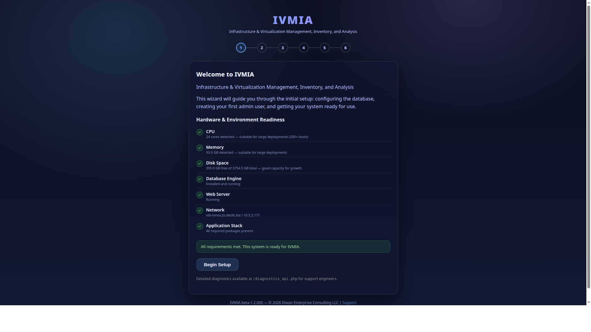

Eight hypervisor platforms. Hundreds of virtual machines. One dashboard that shows every VM, every host, and every resource — regardless of which vendor runs underneath. IVMIA gives you a single pane of glass across your entire virtual infrastructure, so you always know what's running, what's idle, and what's about to run out of room.

IVMIA setup wizard — automated hardware and environment readiness checks before first configuration.
The board wants a plan. Someone suggests Proxmox. Someone else mentions KVM. Someone else says cloud or nothing. But you have 2,000 virtual machines running on VMware right now, nobody's entirely sure which ones are critical and which ones were spun up for a project two years ago and never decommissioned, and you don't know how to set up the cloud replication you're going to need. The person who built most of this is now heads-down on the new satellite office project.
Meanwhile, the development team set up a Proxmox cluster for testing. There are VMs on it that somehow became production. Nobody documented the transition. And the contractor who configured it used conventions that don't match anything else in the organization.
And none of that required your lead engineer to stop what they're doing. IVMIA built the picture from the infrastructure itself. Better yet — IVMIA can orchestrate the cloud builds today, and with VaultSync as its partner, start moving workloads ASAP. The plan and the execution come from the same system.
Ask IVMIA "which VMs haven't been accessed in 30 days?" or "what would happen to capacity if we shut down host 3?" and get a clear answer. Not a spreadsheet you have to interpret — an answer. It knows your topology because it inventories it nightly.
When the new sysadmin starts — or your lead engineer is busy with bigger projects — anyone on the team can query IVMIA to understand the entire VM landscape. What's running where, why certain VMs are on certain hosts, which resource pools matter most. The knowledge lives in the system, accessible to the whole team, not bottlenecked in one person's head.
Orphan detection identifies VMs that are running but nobody owns, consuming resources but serving no purpose. IVMIA flags them so you can reclaim the capacity — or at least find out why they exist before shutting them down.
VMware ESXi, Proxmox, KVM/libvirt, Hyper-V, Docker, Kubernetes, and more — all normalized into one consistent view. You see "virtual machines" and "hosts," not platform-specific jargon. One tool that speaks every virtualization language.
IVMIA tracks CPU, memory, storage, and network utilization across every host. It spots trends — "at current growth, your production cluster will run out of memory in four months" — so you budget for hardware before you hit the wall.
Because IVMIA normalizes everything into a universal model, your operational knowledge doesn't become tied to one vendor's tools. If you move from VMware to Proxmox, your dashboards, reports, and history come with you.
Once installed, IVMIA inventories every host and VM on a schedule. No manual data entry. No spreadsheets to maintain.
Every VM, every host, every resource pool — cataloged and normalized regardless of platform. New VMs appear automatically. Decommissioned VMs are tracked, not forgotten.
CPU load, memory pressure, storage consumption, and network throughput — collected per host and per VM, tracked over time, with alerts when thresholds are crossed.
Identifies VMs that are over-provisioned (wasting resources) or under-provisioned (at risk of failure). Recommends right-sizing based on actual utilization, not the guesses made when the VM was created.
Finds VMs with no recent activity, snapshots consuming storage silently, and resources allocated but unused. Reclaiming waste is often the cheapest way to add capacity.
Designed to assess VM portability between platforms. When you need to move workloads from one hypervisor to another, IVMIA identifies dependencies, compatibility issues, and the order of operations.
Inventory summaries, capacity reports, utilization trends, and cost allocation — across every platform. Export as table, JSON, or YAML. Every report is a query away.
IVMIA notices a host is showing early signs of hardware failure — memory errors ticking up, disk latency creeping. On its own, that's a monitoring alert. Connected to the ecosystem, it becomes an orchestrated response: IVMIA live-migrates the VMs off the failing host to healthy ones. OpenUTM automatically updates the firewall rules for the VMs' new network locations. VaultSync confirms every migrated VM is backed up at its new home. The failing host gets flagged for maintenance. Your users never noticed a thing.
The very next month, IVMIA notices your billing in a cloud it's been monitoring is running high — and that 12 VMs haven't been accessed in 60 days. Instead of just flagging them, it asks you in dollars: "These are consuming $4,200 a month in compute resources. Shall I decommission them?" You say yes. Before powering anything down, IVMIA checks with VaultSync — "do we have verified backups of each one?" VaultSync confirms. IVMIA shuts them down and reclaims the resources. If anyone comes looking for one of those VMs six months later, VaultSync brings it back. You just saved $50K a year, safely, with a full safety net underneath.
These aren't scripted automations someone programmed by hand. The products share knowledge about your infrastructure and coordinate decisions — because IVMIA knows what's running, VaultSync knows what's protected, and OpenUTM knows what's connected. Together, they're more than three tools. They're one infrastructure brain.
IVMIA gives you a complete inventory of every VM — what it runs, how much it uses, who depends on it, and how portable it is. Instead of a months-long discovery project, you get a migration-ready assessment from data you already have. The board gets a real plan with real numbers, not a guess and a timeline.
You don't want a different management console for each customer's platform. IVMIA normalizes everything into one view, with per-customer isolation. Your team learns one tool, manages every customer's VMs from one dashboard, and bills based on actual resource consumption.
IVMIA's orphan detection, utilization tracking, and workload optimization turn VM sprawl into a managed fleet. You find out which VMs are critical, which are abandoned, and which are burning resources for no reason — before you buy more hardware to compensate.
VMware's acquisition was just the beginning. Vendor consolidation means more surprise price hikes, more forced migrations, more "we're sunsetting the product you depend on" emails. IVMIA ensures your operational knowledge is platform-independent, so you can move when you need to — not when you're forced to.
Organizations that moved everything to the cloud are discovering the bills never stop growing. Hybrid and on-premises virtualization is making a comeback — but only if you can manage it efficiently. IVMIA is designed to span on-premises and cloud workloads in a single view.
Automated attack tools will probe for VM escape vulnerabilities, misconfigured resource limits, and unpatched hypervisors faster than manual audits can catch. IVMIA's continuous inventory and health monitoring creates an always-current security baseline — catching misconfigurations before they become attack surfaces.
When quantum computing breaks current encryption standards, every encrypted VM disk will need new protection. Coordinating that across hundreds of VMs on multiple platforms is a fleet management problem — the kind IVMIA is designed to solve.
See how IVMIA fits with what you already run:
IVMIA vs The Stack You're Already Paying For → Scenario: M&A Integration → vs vCenter & Nutanix →IVMIA supports KVM/libvirt and Proxmox today, with VMware ESXi, Hyper-V, Docker, and Kubernetes platforms available via subscription. Free community tier gets you started with core inventory and monitoring.
View PricingIVMIA puts every host, every VM, and every resource on one screen — so your team manages workloads, not vendor tools.
View Pricing Talk to Us